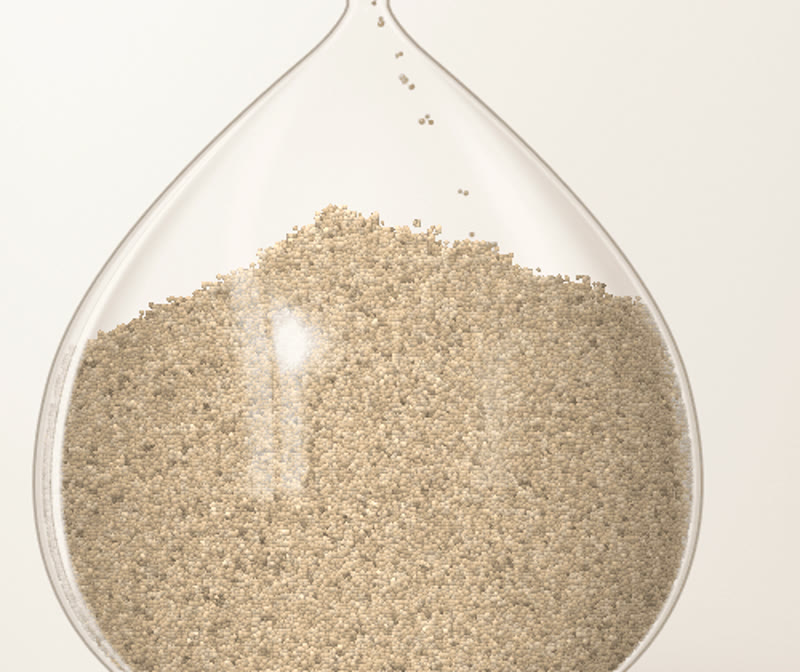

Español · English
Mobile app
On Android the hourglass is in your hand. Move it, or tilt the phone, and the sand slides and leans to one side: the surface sits on a diagonal, higher on one side than the other. Lay the phone down to pause. Flip it to start over.

Outside Google Play, Android may warn you (Play Protect or unknown sources). That’s normal for a direct APK from the developer.